The author management page is a tool to keep your information on INSPIRE correct and up to date.
Below, you can find a detailed description of all the action that can help you manage your information on INSPIRE.
This is how the new profile page looks like. Once you are viewing a profile of an author, you will notice that you have several options. You can find them in the navigation bar below the author name.
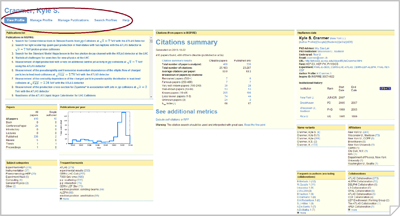Clicking on "Manage profile" will take you to the author management page.
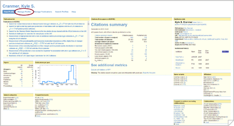The first thing you can do is login with your arXiv account. Login is strongly recommended but not necessary. You can still continue as a guest. That means you can manage your profile but your edits will not be visible right away. It will take some time for your changes to appear as they will be managed manually by one of our administrators.
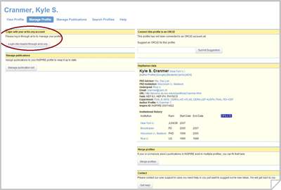Clicking on the "Login into INSPIRE through arXiv" button will redirect you to the arXiv website. There you can use your arXiv username and password (or create a new account).
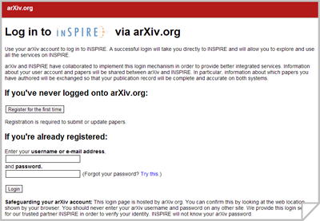will be redirected back to INSPIRE automatically after logging in.
The first time you login through arXiv, INSPIRE will show you the profile(s) that match your publication list.
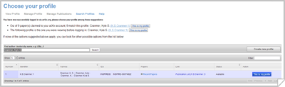Please, choose the best match. If none of them matches your publication list wholly, select the closest match and add the missing publications in a later step.
It is recommended that you add an ORCiD to your profile.
ORCiD (Open Researcher and Contributor ID) is a unique researcher identifier that distinguishes you from other researchers. It holds a record of all your research activities. You can add your ORCiD to all your works to make sure they are associated with you. For more information you can visit http://www.orcid.org
The process is similar to the arXiv login. You will be directed to ORCiD.org to login or register a new account. After that, you will be redirected back to your author management page. INSPIRE will now get updated with the publications you have on your ORCiD profile.
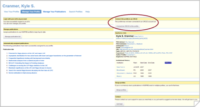If the publications received from ORCiD exist in the INSPIRE database, they will be assigned to your publication list. You will only have to login through ORCiD once. Future updates on ORCiD will be included on INSPIRE automatically.
If you notice that publications of an author are split over two or more profiles, you can merge them in one profile.
Clicking on "Merge profiles" will lead you to a list of automatically suggested additional profiles.
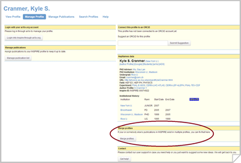If the profile you are looking for is not on the list, you can use the search box to find it.
You can add as many profiles as necessary by clicking on "Add to merge list". Decide which one you want to make the primary profile. Once you have a complete set of profiles that you want to merge, press the "Merge profiles" button.
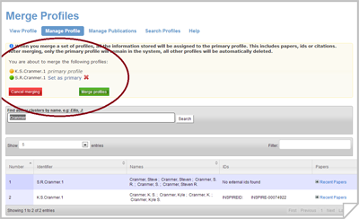Your actions will need to be confirmed by our staff before they take effect, even you are logged in via arXiv.
Consider that once the action is confirmed, all the information (including publications, IDs and citations) will be assigned to the profile you choose as primary profile (by default, the one you started the process from is set as primary profile). After merging, only the primary profile will remain in the system and all the others will be automatically deleted.
Having your publication list up to date is important as this is what makes your statistics, such as number of citations, appear correctly. For reviewing or correcting your publication list, click on "Manage publications" in the navigation bar.
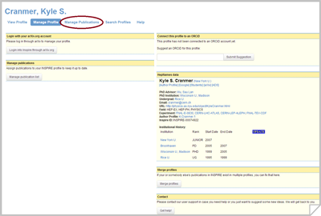For each publication you can:
You can select multiple publications and complete one action for all of them by clicking on the corresponding buttons on the top of the page.
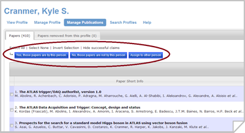You can also decide for each publication separately using the buttons on the side.
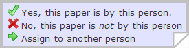If your publication list is incomplete, you can also search for your missing papers in the INSPIRE database through the search box at the bottom of the page.
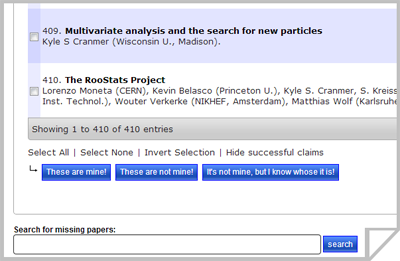You will get a list of search results on INSPIRE. To add a paper from this list to your publication list, click on the green "Attribute this paper" link.
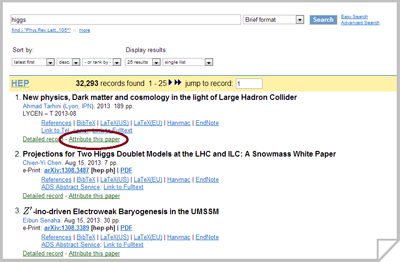In a next step, you will be able to select the appropriate author for the publication (either you or a different author).
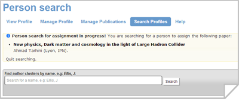
Connect profile to a HepNames record
To link the correct HepNames record to your profile page, please write to authors@inspirehep.net
If none of the options apply, you can also create a new HepNames record. Note that that new record you created will be reviewed by our staff before release, thus it will not be visible immediately.
If you have any other question or need help, please contact us at feedback@inspirehep.net